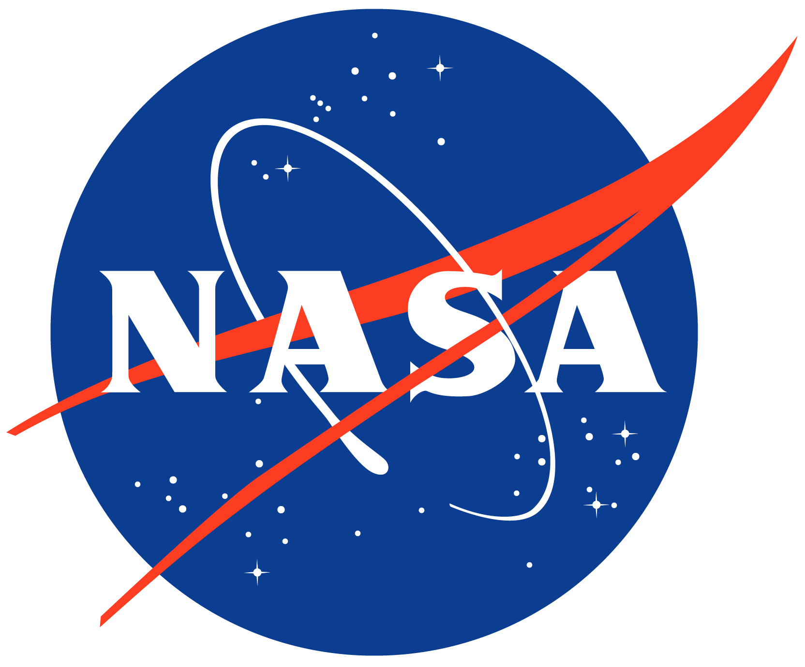
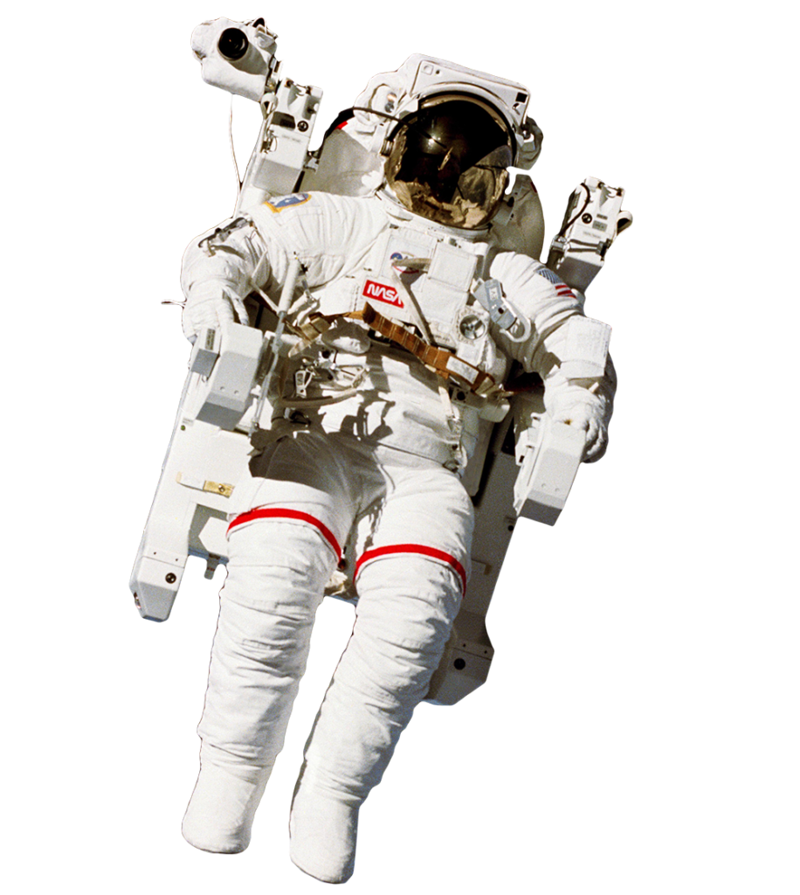

-

- Goddard Space center
-
The Goddard Space Flight Center (GSFC) is a major NASA space research laboratory located approximately 6.5 miles (10.5 km) northeast of Washington, D.C. in Greenbelt, Maryland, United States.
Read on →
-

- Jet Propulsion Laboratory
-
The Jet Propulsion Laboratory (JPL) Science Division investigates physical and chemical processes on the Earth, in the Solar System, and throughout the universe.
Read on →
-

- Johnson Space Center
-
Space Center Houston is a leading science and space learning center, the official visitor center of NASA Johnson Space Center in Houston and a Smithsonian Affiliate museum.
Read on →
-

- Kennedy Space Center
-
The John F. Kennedy Space Center (KSC, originally known as the NASA Launch Operations Center) is one of ten National Aeronautics and Space Administration field centers.
Read on →

- ABOUT
- SERVICES
- WORKS
- BLOG
- CONTACT US
NASA
National Aeronautics and Space Administration
The National Aeronautics and Space Administration is an independent agency of the United States Federal Government
responsible for the civilian space program, as well as aeronautics and aerospace research.

